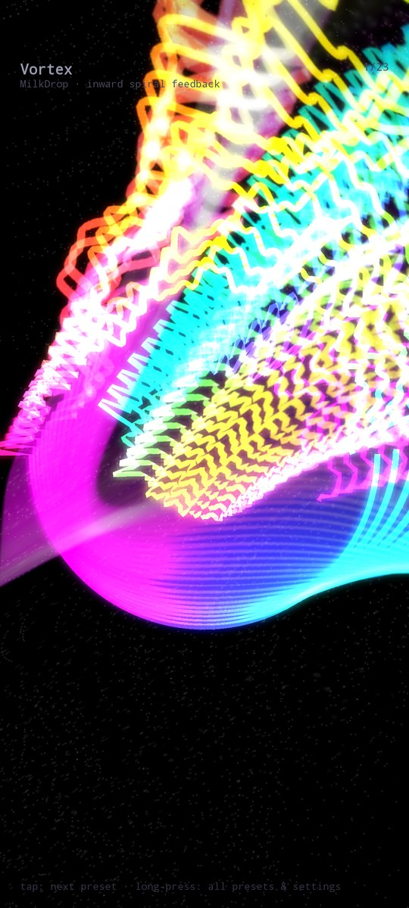
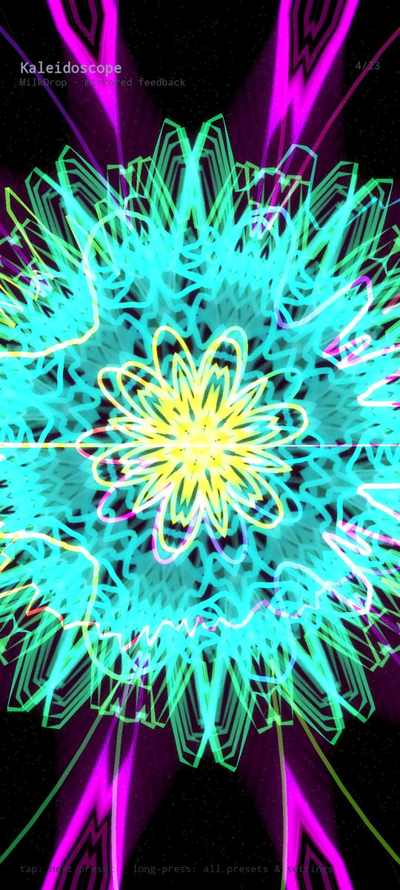
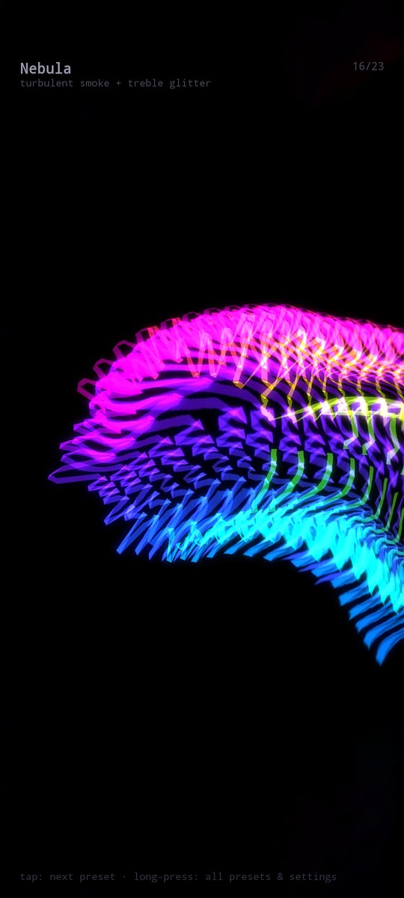
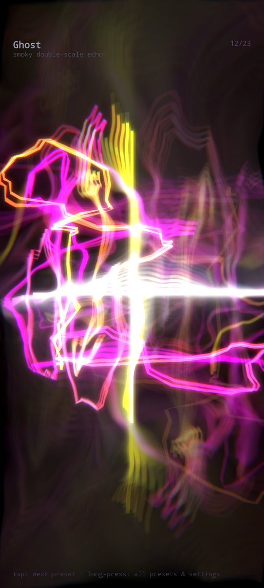
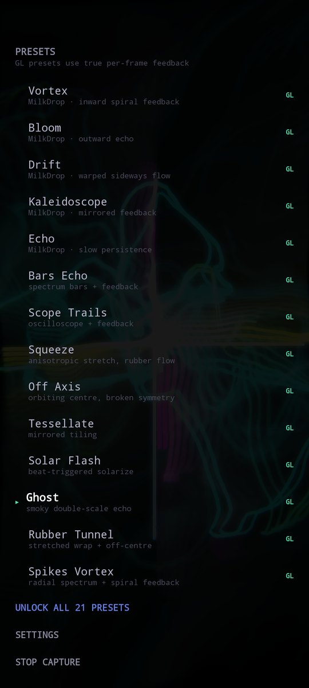

Reacts to any app
Flow listens to the audio already playing on your phone and draws it. Start your music first, open Flow, watch.
90s music visualizer
Winamp-style visuals that react to whatever app you're playing — Spotify, YouTube Music, your offline library. No importing, no separate player.
Get it on Google PlayAndroid 10 or newer · 3 visualizers free forever



That, in your pocket, on whatever you're streaming.
Flow listens to the audio already playing on your phone and draws it. Start your music first, open Flow, watch.
Every frame warps the one before it, so trails, spirals and smoke build up for real instead of being faked with blur.
Real audio analysis — 160 frequency bands and beat detection. Shapes jump on the kick, colours change on the beat.
Spirals, kaleidoscopes, smoke, bass-drop rings, tiling mandalas, plus an exact spectrum analyzer and oscilloscope.
Pure black backgrounds, so your screen only lights what's drawn. 60 fps at full resolution, portrait or landscape.


Confirmed: Spotify · YouTube Music · YouTube · Deezer · VLC · Chrome · offline music players
One honest limitation: any app can opt out of Android's playback capture, and a few do — SoundCloud is one. When that happens Flow tells you on screen instead of pretending.
No account, no ads, no sign-up.
Vortex, Bars and Scope — free forever, not a trial.
All 23 visualizers and every one added later. Weekly with a free trial, or a one-time lifetime unlock.
Flow analyses sound as it plays and throws it away. Nothing is recorded, stored or uploaded, and the microphone is never used. Android asks you to share your screen when you start — that's how the system hands the audio over.
Read the privacy policy →